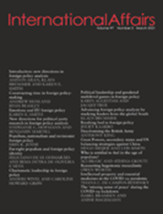
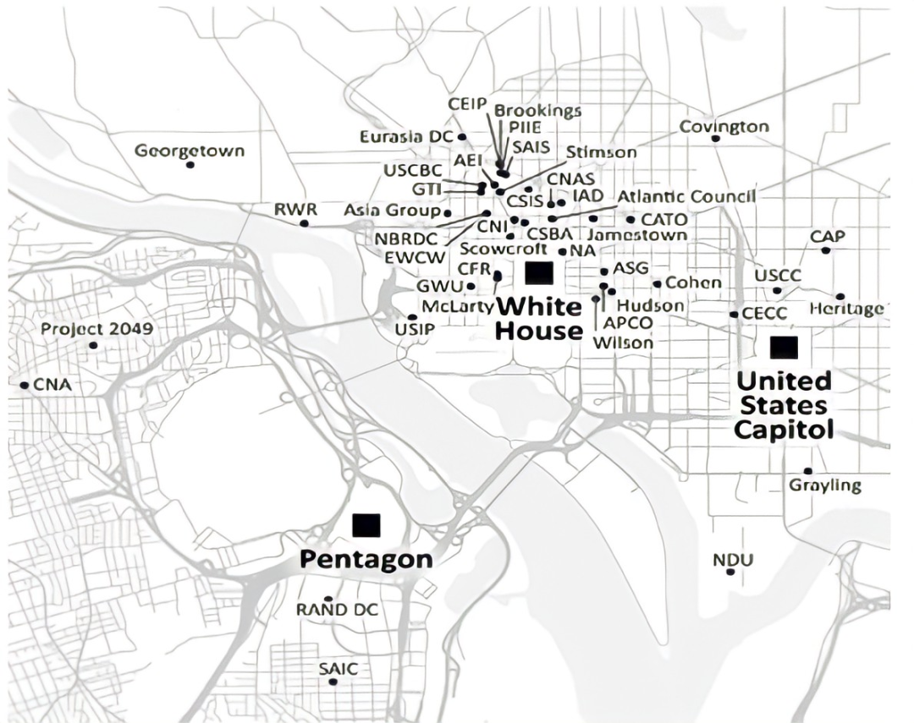
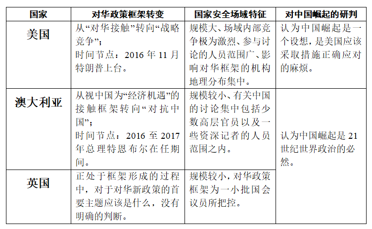
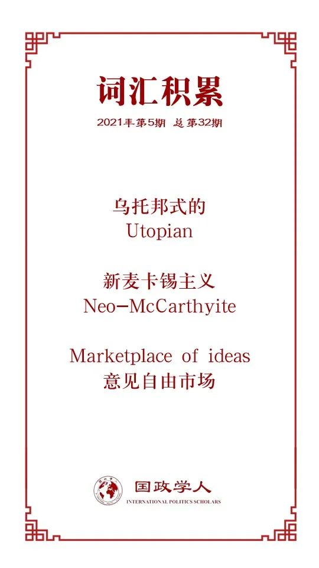

收录于合集

作品简介
【作者】 David M. McCourt，加利福尼亚大学戴维斯分校社会学系副教授，研究方向为国际关系社会学；美国、英国和欧盟的外交政策；社科哲学。
【编译】 胡可怡（国政学人编译员，四川大学国际关系学院）
【校对】 常佳艺
【审核】 张曼娜
【排版】 石寒冰
【美编】 杜从竹
【来源】 David M. McCourt, Framing China’s rise in the United States, Australia and the United Kingdom, International Affairs , 2021, iiab009, https://doi.org/10.1093/ia/iiab009
【归档】 《国际关系前沿》2021年第5期，总第32期。
期刊简介

《国际事务》（ International Affairs ）是国际关系领域的一流学术期刊，也是多学科综合性学术期刊。本刊于1992年由伦敦皇家国际事务研究所查塔姆学院（Chatham House）创立，内容来源广泛，力图囊括业内专家、学术新秀对重点、热点问题的最新思考。2019年期刊影响因子为3.705，在95个国际关系类刊物中位列第4名。
**Framing China’s rise in the United States, Australia and the United Kingdom
**
美澳英外交政策框架下的“中国崛起”
David M. McCourt
内容提要
随着中国实力的增强及其与西方关系的恶化，越来越多的西方国家在解读“中国崛起”现象时呈现出态度“硬化”的趋势。本文借鉴社会学中的“场域理论”，试图阐释上述趋势中的三个关键国家——美国、澳大利亚和英国对中国框架认知的转变，并将对华认知的不同框架与三国国家安全场域的动态变化相联系。
本文认为，美澳英对“中国崛起”的乐观主义情绪已经向忧虑疑惧转变，但是三国认知转变的形式不尽相同：美国对“中国崛起”的战略判断从可进行接触（be engaged）、可加利用的经济机会（economic opportunity），转变为对“美国的实力、影响力与利益”形成挑战的竞争对手，并基于该认知使自身陷入对华“战略性竞争”的桎梏之中；澳大利亚对“中国崛起”的框架认知经历了与美国类似的从“接触”到“对抗”（standing up）的转变，然而这一转变不仅是出于对国家安全的考虑，同时也是为了在中国主导的亚洲中维护自身的国家身份认同；而英国既没有拒绝与中国进行合作，也没有表现出明显的对华竞争倾向，但是其长期奉行的“经济机会”对华框架也日益受到国家安全框架的影响。
文章导读
研究关于“中国崛起”的框架认知变化是在挖掘国家对华战略政策变化根源时不可缺少的分析工具。本文以社会学“场域理论”为基础，将美国、澳大利亚、英国不同的对华框架与其“国家安全场域”的演变动态相联系，比较分析了三国国家安全场域的各自特征及其对“中国崛起”外交政策框架制定的影响。
本文认为，美国国家安全场域呈现出某种“信念”的影响，即认为中国的崛起可以被迟滞乃至阻止，这加剧了场域内有关对华框架的激烈争论，以及时不时发生的框架转变。特朗普是美国对华认知框架由“潜在挑战者”向“当前现实威胁”转变的关键人物。相比之下，澳大利亚国内有关中国的讨论集中在包括少数政府高官以及一些资深记者的人员范围之内；在英国，外交政策框架中对“中国崛起”的战略判断则为一小批国会议员所把控。
本文首先对“场域理论”的内容进行了简要介绍，并在之后的三部分中详细地阐述了美国、澳大利亚和英国对“中国崛起”的框架变化；第五部分对三国各自的国家安全场域如何产生了不同的对华框架进行了解释；结论部分对主要的理论性、经验性研究所得进行了总结。
01
理论基础
在社科领域，“场域理论”一直是备受欢迎的理论工具，但是并未被国际关系学者充分利用。在已有的研究成果中，有学者尝试将该理论运用在对诸如欧盟这样的“超国家场域”的分析之中，但事实上，“场域理论”也能够为国家层面上的政治争论提供一种动态的研究视角，并且与其他理论相比具有显著的优势。
“场域”是一种边界相对明确的空间， 在“场域”之中，各个主体竞相争夺某种形式的权力或资本。 正如社会学家杰弗里·萨拉斯（Jeffrey Sallaz）与简·扎维斯卡（Jane Zavisca）的阐释：“场域是一个宏观的概念，指的是行为体所处的社会世界。对行为体而言，需要根据该社会世界的规则调整自己的行为。”就国家安全场域而言，场域内的行为主体既包括政党、游说者与决策者，同时也囊括学者、商界领袖和智库等角色。 不同行为主体的竞争逻辑有所区别，例如政党为获取政治权力而竞争，而学者则为影响力与学术声望而竞争。
“场域理论”将外交政策框架的制定视为场域内各主体持续争夺对某一国际对象的解释权（即将该对象视为本国的问题还是机遇，亦或两者兼有）的最终胜负结果。场域的结构，即场域内影响力的分配、所遵循的竞争规则以及世界观的分布，塑造了框架的最终形态。简言之， 本研究的关键问题在于：各个场域的不同结构如何推动行为主体产生了对中国的特定框架，以及为何最终形成的恰恰是这种认知框架。
02
美国：从接触政策到战略性竞争
“接触”这一术语最早由老布什政府创造并使用，但是实际上其渊源可追溯到1972年尼克松访华， 并在此后的2000年（克林顿政府接纳中国加入WTO）达到接触的顶峰。 多年来，对华接触的理念深刻塑造着美国对华政策的逻辑框架，历任政府一直希望“接触”能够引导中国如罗伯特·佐利克（Robert Zoellick）于2005年所设想的那般，成为国际社会中“负责任的利益攸关者”。而当前美国国内大部分对接触政策的批判都来源于一种观念，即认为当初接纳中国加入WTO，并且认为美国能够推动中国转变的战略判断实际上是一种“乌托邦式”的（utopian）臆想。
接触政策在实行过程并非没有反对声音。在2007年，记者詹姆斯·曼（James Mann）就批评美国当时的对华接触政策是“异想天开”（fantastical）。小布什上台之后，曾一度承诺将对中国采取更为强硬的态度立场，但是之后“9·11事件”的发生转变了其原本的外交政策优先事项。即便如此，小布什还是为之后2010年的“重返亚太”战略作了一些铺垫。
尽管美国“亚太再平衡”使中美间的关系变得愈加微妙， 但直到2016年11月特朗普上台之前，接触政策一直是美国首要的对华政策框架。 特朗普就职之后，其麾下的“中国团队”包括一批反对以“接触”为对华前提的政治人物。在一系列高调的演讲中，副总统彭斯（Mike Pence）、副国家安全顾问波廷格（Matt Pottinger）、国务卿蓬佩奥（Mike Pompeo）都反复渲染了对中国的战略担忧。
对接触政策的抛弃包含了不同的经济、军事和意识形态因素，这些因素共同塑造了特朗普对华政策中的强硬色彩。就经济领域而言，2018年7月，以安全为导向的贸易顾问纳瓦罗（Peter Navarro）与贸易代表莱特希泽（Robert Lighthizer）作为急先锋挑起了对华贸易战，对这一举措可能的经济后果的担忧使纳瓦罗和莱特希泽与以市场为导向的财政部长史蒂文·姆努钦(Steven Mnuchin) 之间产生了政见分歧。
就军事安全领域而言，麦克马斯特（H. R. McMaster）等人将“战略性竞争”提升为对华首要政策框架，这一概念在2020年春夏期间国务卿蓬佩奥、司法部长比尔·巴尔（Bill barr）、国家安全顾问奥布莱恩（Robert O’Brien）、联邦调查局长克里斯托弗·雷（Christopher Wray）相互呼应的四场演讲中被进一步阐释。政策规划办公室主任斯金纳(Kiron Skinner)鼓吹的“中美文明冲突论”，则反映了一些与特朗普关系密切的高层人员，比如史蒂夫·班农（Steve Bannon），在看待中美关系时所持的一种更广泛的意识形态视角。由此又产生了两种观点之间的分歧：一种观点批评通过接触促使中国改变的观点，另一种观点则认为政权更迭是可接受的唯一结果。在上述政见分歧之外，新冠疫情的爆发推动了中美关系的继续恶化，进一步巩固了美国 “战略竞争”的对华政策框架。
尽管或许还没到形成“共识”的地步，但在华盛顿，对中国的深切担忧是两大政党之间少有的、拥有共同语言的议题。就目前来看，接触政策回归的可能性远远小于中美分歧的扩大化，以及“新冷战”的到来。
03
澳大利亚：与中国对抗
从表面上看来，澳大利亚的对华政策框架经历了与美国相似的变化过程（即1972年以来的“与华合作”框架的终结），导致了中澳关系的急转直下。然而，澳大利亚这一转变的时间节点以及本质内涵均与美国存在不同。
澳大利亚的对华接触政策是基于中澳两国经济的互补性以及巨大的贸易合作潜力而制定的，同时也受澳大利亚能够在中美之间进行对冲的观点影响。 2012年，时任总理吉拉德（Julia Gillard）发布名为《亚洲世纪中的澳大利亚》的白皮书，标志着该国对华接触的顶峰。 这份白皮书详细阐释了“亚洲崛起”带来的机遇，并认为澳大利亚应该成为“一个有亚洲文化、有亚洲担当的国家”。
但与美国一样，乐观主义在澳大利亚并非无所争议。自20世纪90年代以来，一些观察者就开始将中国视为潜在的麻烦。尽管如此，直到本世纪10年代中旬，“机遇”一直是澳大利亚对华政策框架中的核心关键词。在此框架下，该国期盼与中国建立“牢固而具有建设性的纽带关系”，进行广泛而深刻的合作。
澳大利亚关于中国观念的转变发生在2016至2017年总理特恩布尔（Malcolm Turnbull）的任期之内。 经由记者高安西（John Garnaut）以及一些电视节目的渲染，一系列关于中国“统一战线”的事件在澳大利亚受到广泛关注，包括2016年新南威尔士州工党参议员接受中资公司捐款事件的有关澳大利亚政府高官与居澳华人密切交往细节的报道尤其使民众震惊。学者汉密尔顿（Clive Hamilton）对此评论称，捐款事件反映了中国正在使用“复杂、微妙而制度化的威逼利诱塑造其他国家的行为与思维方式”。而在2017年底，特恩布尔政府便出台了旨在“阻止外国干涉”的国家安全法案。
此外，2016年的“南海仲裁案”也促进了澳大利亚的对华观念转变进程，使该国国内的许多精英人士放弃了在中美间进行“对冲”的想法，转向一种新的国家安全解读视角。在这一转变的过程中，甚嚣尘上的“印太战略”的影响不容忽视，“印太”的概念为重启“四方安全对话”（Quad）机制，以加强澳大利亚与美国、印度和日本的防务安全关系奠定了基本原理。而不管是Quad还是五眼联盟，都是在前总理陆克文（Kevin Rudd）任期内曾经一度黯然失色的安全性组织。
陆克文对Quad的怀疑也与澳大利亚对华框架变化中所体现的某些观点分歧相呼应。在澳国内，有一些声音对以汉密尔顿《无声的入侵》为代表的对华“鹰派”观点进行了批评，认为其是“新麦卡锡主义”（neo- McCarthyite）的体现，与此同时也对《2018年国家安全立法修正案(间谍和外国干涉)法》的出台表达了忧虑，担心这些新举措将恶化居澳华人群体的生存环境。除此之外，澳大利亚国内也存在认为“澳大利亚应该追随美国遏制中国”，以及认为“澳大利亚应该避免华盛顿的意识形态入侵”的两种截然不同观点之间的争论。
总体来看，澳大利亚精英中既有主张遏制中国的“对华鹰派”，也有认为美国在亚洲的影响正在衰弱，澳大利亚需要审慎考虑自我保全方法的“理智派”。但不管怎样， 澳大利亚的对华政策目前仍然以实用主义为主导，并且坚定地将本国战略置于“印太框架”之下，避免被特朗普政府大肆宣传的“威胁框架”牵着鼻子走。
04
英国：正处于框架形成的过程中？
英国对华态度“硬化”的过程与美、澳大既有相似之处，又存在诸多不同。与澳大利亚一样，英国的转变并非在短时间内急剧发生，而是一个循序渐进的进程。在该进程中，英国一边思考解决中英双边关系中所存在问题的方法，一边又希望深化与中国的关系。对英国而言， 崛起的中国既不是某种具有现实意义的安全威胁，也不是能够解决一切问题的重大机遇。
与澳大利亚相似，英国的对华接触政策也主要根源于中国带来的“经济机遇”。 在本世纪10年代中期英国首相卡梅伦（David Cameron）和财政大臣奥斯本（George Osborne）的亲华政策施行期间，英国的对华接触水平达到了顶峰。 奥斯本曾承诺英国将加入由中国主导的亚洲基础设施投资银行(AIIB)，并且希望中国对包括HS2高铁工程在内的英国工业产业进行投资。双边战略合作关系的宣布体现了上述基于经济利益的对华乐观主义。2010年英国的《战略防御与安全评估》(SDSR) 反复强调了中英关系发展的益处，2015年SDSR提及中国的次数则更加频繁(共计19次，之前的版本仅3次)，并且以更为乐观的态度对中英关系的前景进行了如下阐释：“我们并非寻求与中国在所有事项上都保持观点一致……我们的目标是与中国建立更深入的伙伴关系，进行更紧密的合作以应对各种全球性挑战。”
相对而言，继任的特蕾莎梅并没有表现出如其前任那种程度的乐观。即便如此，英国对华乐观主义态度所持续的时间还是比美国、澳大利亚更为长久。然而在近两年左右的时间里，香港骚乱、新冠疫情等热点事件增长了英国国内“对华怀疑论”的声势，使得许多英国人突然意识到，中国崛起不再是虚幻的“将来式”，而是当下必须面对的、令人不安的现实。在公众对华看法日益恶化的背景下，对于过度依赖中国的担忧促使英国国内两党逐渐转向更加强硬的对华政策框架。
英国框架转变的相对迟滞可部分归因于“脱欧”事宜的长期悬而未决。一方面，“脱欧”主宰了英国的政治议程安排，使其无暇顾及其他事务。与此同时在脱欧之后， 英国需要在世界舞台上为自己寻找一个新的“全球英国”的角色定位，这提供了两个截然不同对华政策选择： 其一，与中国保持接触；其二，以“自由民主”的价值规范为标语，引领民主国家的反华浪潮并与中国进行对抗。2018年2月英国下议院国际关系委员会的一份备忘录即体现了第一种政策倾向，该备忘录认为“全球英国”应借助例如2015年建立的中英全球全面战略伙伴关系等机制，深化与中国的合作，互助解决全球性挑战。对华怀疑论者则对第二种政策倾向青睐有加，在英国国内，支持怀疑论立场的人数虽少但是影响显著，并且背后还有来自美澳国内对华强硬派的支持。虽然约翰逊政府目前尚未对怀疑论者的建议加以采纳，但仍将其视为可加考虑的政策选择。
随着事态的迅速发展，英国国内视中国为威胁的跨党派对华认识框架的影响可能会越来越显著。但就目前而言， 英国政府的官方态度仍然是理智且以实用主义为导向的 ，这与澳大利亚“务实地与中国对抗，但始终保持合作大门的敞开”相类似。英国外交事务特别委员会2019年3月的分析现在仍然成立： “无论在政府还是外交部内部，对于对华新政策的首要主题应该是什么，似乎都没有明确的判断。”
05
中国崛起以及美国、澳大利亚、英国的国家安全场域
如何解释上述三个国家有关“中国崛起”框架变化的本质和不同的时间进程？常识性的分析常常将其归因于不同的国家利益。然而，这种解释方法却忽视了国家利益产生与变化的动态过程。无论看起来有多么不言自喻，国家利益都应该通过框架进行解读。
在英澳的认知中，中国崛起是21世纪世界政治的必然；但在美国看来，中国崛起只是一个设想，是美国应该正确应对的一个麻烦 ，这是美国对华研判区别于英澳两国的首要差异。在美国战略决策者看来，美国应该对中国的崛起采取一些措施，并且认为对华战略竞争能够有效“迫使中国停止或减少损害美国重要国家利益的行为”。
人们普遍认为产生上述差异的核心原因在于美国的实力优势使其有能力采取更多行动。但从场域理论的视角来看，美国的国家安全场域具有空前的规模，并且场域内部的讨论与竞争极为激烈。在华盛顿，“中国问题常会”每天都有大量诸如演讲、小组讨论、国会作证等的活动，使得华盛顿成为了美国“观察中国的中心”（可参见图1研究机构分布图）。相比于美国，澳大利亚和英国的国家安全场域规模更小，并且地理分布上不那么集中，关于政策的争论也不那么激烈。另外，类似于澳大利亚洛伊研究所（Lowy Institute）、澳大利亚战略政策研究所(ASPI)和英国皇家联合服务研究所(RUSI)等的英澳研究机构也是国际“意见自由市场”（marketplace of ideas）的一部分，与美国的国家安全场域联系紧密。
美国场域内关于对华政策的讨论如此激烈根本归因于该国决策者职位的政治任命制度。在美国，国家安全研究机构既是有志于仕途之人的跳板，也是从政治生涯离任之人另谋生计的好去处。就此意义而言，争夺影响力的斗争兼具专业性和政治性，因为那些希望进入政府的个人会通过对专业性的苛求、维持自己在国家安全事务中的一席之地以寻求影响力的拓展。

图1：美国国家安全场域中影响对华政策框架制定的机构地理位置分布图
美国国家安全场域的一个标志性现象是，随着每一次政府的更迭及其带来的不同的执政思维，在与某些国家或地区（如中国）相关的议题上，倾向于在“接触”与“强硬”之间摇摆。这一现象一定程度上与政党政治和政治化的智库空间相关联：共和党政府共和党政府更偏向于倚重保守派研究机构（如美国传统基金会和美国企业研究所），而民主党也有类似的智库资源（比如布鲁金斯学会和美国对外关系委员会等）；同时也反映了美国政府人员任免的“旋转门”（revolving door）动态机制。
然而，这种机制并不适用于澳大利亚和英国。在英澳国内，政府、大学、商界、智库之间界线明晰。对这两国而言，外交政策和国际关系是政府的职责，而非大学可以随意施加影响的事务。此外，无论是在英国还是在澳大利亚，对中国问题的讨论都并非一个与党派政治有关的问题。在澳大利亚，诸如高安西、哈切尔（Peter Hartcher）、罗文凯（Rowan Callick）这样的记者主导着本国国内有关对华政策的讨论；在英国，政治风险顾问和企业顾问的在对华框架塑造中的影响则较为突出。
06
结论
以往的观点认为，美国、澳大利亚、英国三国对华合作框架转变背后原因都在于国家利益的转变以及中国日益积极有为的外交政策。本文对这一被近乎认定为常识的观点提出了质疑，认为这种解释方式没有对各国对华框架认知转变的具体性质及时间进程给予足够关注。基于对三国国家安全场域的解读，本文试图对上述不足进行弥补。
相对于结构相似的英澳场域，本文着重分析了美国国家安全场域区别其他两国的独特性及其对美国对华政策框架产生的影响。在特朗普执政期间，美国一直致力于将这一框架推销给英澳两国。拜登上台之后，美国很可能将进一步对该框架进行拓展与细化。美国急于推动从“接触”到“战略竞争”的对华框架急剧转变，反映了美国国家安全政策制定的动态过程，尤其是智库- 研究-政策之间的紧密联系以及政治任命制度对影响力争夺的激励。
需要思考的问题是，战略竞争是否能够给英澳两国在各自与中国的双边关系中带来更多的希望而非陷阱？战略竞争是否将迫使各国决策者在中美两国之间进行非此即彼的选择？随着美国进一步向印太、非洲、拉美地区国家兜售自己对中国崛起的新释义，上述问题将不仅局限于英、澳两个国家。
总体来看，美国对中国崛起的理解源自该国国家安全场域内部激烈竞争的最终结果。澳大利亚则担心本国在中国主导亚洲之后可能出现国民身份认同危机，因此希望美国从经济、外交、战略等层面深度介入印太事务。英国领导人则对大国竞争时代到来之后，中英关系下降的可能性感到忧虑。英澳两国国家安全场域的规模较小、讨论强度较低，使其不至于出现类似于美国在2017年进行的对华框架急剧转向。
借用一位英国观察家的话：“中国是世界上最大的罗夏墨迹测试(Rorschach test)……你看得越近，你就越不了解中国，而越了解你自己。” 中国崛起对美国、澳大利亚和英国构成了挑战，尽管这些挑战表面上相似，但各自具有独特性，这种独特性反映在各国的国内辩论之中。政策制定者和中国问题专家正在寻找平衡的、以事实为基础的、合理的回应方式，以应对中国持续增长经济和军事实力。
译者评述
“场域理论”由法国社会学家皮埃尔·布迪厄（Pierre Bourdieu）于20世纪60年代提出。在布迪厄看来，社会是由经济的、政治的、文化的等等不同的场域所构成。每个场域都有自己特定的运行逻辑和资本，具有某种惯习的主体在场域中因占有不同位置或地位而占有了资源，社会主体不断为这些资源而竞争和冲突，以此推动场域的不断发展。总而言之，社会中任何一个场域始终都是个人的或集体的行动者运用其手握的各种资本进行相互比较、交换和竞争的斗争场所。
在人文社科领域，“场域理论”一直是颇受其他学科学者青睐的理论分析工具。但在国际关系学界，目前使用“场域理论”进行分析的文章研究对象多为类似于欧盟的“超国家行为体”，缺乏在国家层面对该理论的充分应用。基于此背景，作者大胆地将“场域理论”引入对美、澳、英三国对华政策框架的解析之中，将外交政策框架的制定视为场域内各主体持续争夺对某一国际对象的解释权（即将该对象视为本国的问题还是机遇，亦或两者兼有）的最终胜负结果。提出对华政策框架的关键问题在于各个场域的不同结构如何推动行为主体产生了对中国的特定认知观念，以及为何最终形成的恰恰是这种特定的认知形式。
在该理论视阈下，作者详细而深刻地梳理三国对华政策框架由以合作为主题的“接触”框架转向更为强硬的“竞争”乃至“对抗”框架的时间进程，以及该转变过程中三国国家安全场域内所凸显的观念竞争。在其看来，美、澳、英三国对华框架转变的原因及本质与其国家安全场域的特征息息相关，看似趋同，但是体现着不同的战略内涵（见下表）：

总的来看，本文的学术价值集中体现在以下两点：
其一，从理论层面来看，本文将社会学“场域理论”引入对国家对外政策框架的分析过程，证明了在国家层面使用该理论作为分析工具的可行性，为打开国家“黑箱”、探讨单元变量对国家对外政策的影响提供了一条可行的思路；
其二，从经验层面来看，本文通过对美、澳、英三国对华框架转变的过程梳理以及三国之间国家安全场域的比较分析，重点突出了一个“异”字，这种“异”既体现在三国对华框架转变的不同深层内涵之中，也体现在各国场域内部的各种观点竞争之中。对我国而言，认识到存在“异”的西方并非铁板一块，有利于具体问题具体分析地观察各国对华战略动向，从而理清该国对华态度转变的深层症结所在。
参考文献
[1]郭文、黄震方，《基于场域理论的文化遗产旅游地多维空间生产研究——以江南水乡周庄古镇为例》[J]《人文地理》，2013，28(02)：117-124.
词汇整理

文章观点不代表本平台观点，本平台评译分享的文章均出于专业学习之用, 不以任何盈利为目的，内容主要呈现对原文的介绍，原文内容请通过各高校购买的数据库自行下载。
好好学习，天天“在看”

国政学人
支持学术公益与知识传播
微信扫一扫赞赏作者 __赞赏
已喜欢，对作者说句悄悄话
取消 __
发送给作者
发送
最多40字，当前共字
上一页 1/3 下一页
长按二维码向我转账
支持学术公益与知识传播
受苹果公司新规定影响，微信 iOS 版的赞赏功能被关闭，可通过二维码转账支持公众号。